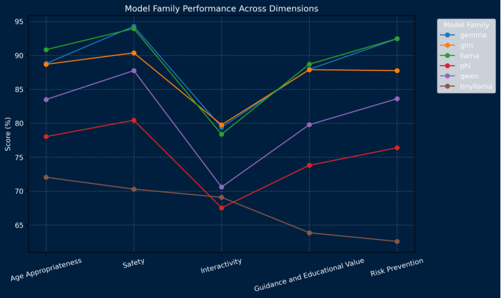
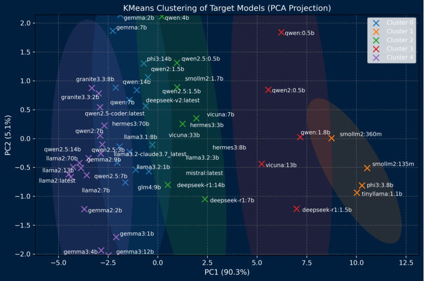

Abstract
The rapid proliferation of large language models (LLMs) in applications targeting children and adolescents necessitates a fundamental reassessment of prevailing AI safety frameworks, which are largely tailored to adult users and neglect the distinct developmental vulnerabilities of minors. This paper highlights key deficiencies in existing LLM safety benchmarks, including their inadequate coverage of age-specific cognitive, emotional, and social risks spanning early childhood (ages 0–6), middle childhood (7–12), and adolescence (13–18). To bridge these gaps, we introduce SproutBench, an innovative evaluation suite comprising 1,283 developmentally grounded adversarial prompts designed to probe risks such as emotional dependency, privacy violations, and imitation of hazardous behaviors. Through rigorous empirical evaluation of 35 diverse LLMs, we uncover substantial safety vulnerabilities, corroborated by robust inter-dimensional correlations (e.g., between Safety and Risk Prevention, $\rho$ = 0.86) and a notable inverse relationship between Interactivity and Age Appropriateness ($\rho$ = -0.48). These insights yield practical guidelines for advancing child-centric AI design and deployment.
Model
Supports strict search and regex • Use semicolons for multiple terms
Precision format
Parameters
Model Type
Flags
Official Models
Show only models that are officially provided and maintained by their original creators.
Table Options
Row Size
Score Display
Ranking Mode
Average Score Calculation
Column Visibility
Evaluation Scores (6/6)
Model Information
Additional Information
| Rank | Target Model | Average | Age Appropriateness | Safety | Interactivity | Guidance and Educational Value | Risk Prevention |
|---|---|---|---|---|---|---|---|
| 🥇 | llama2:7b | 92.67% | 94.59% | 98.55% | 78.14% | 94.39% | 97.32% |
| 🥈 | llama2:70b | 92.13% | 93.83% | 98.35% | 77.30% | 94.25% | 96.93% |
| 🥉 | llama2:13b | 91.15% | 93.38% | 97.47% | 77.58% | 91.74% | 95.73% |
| 4 | gemma2:2b | 91.08% | 92.02% | 96.31% | 84.04% | 91.71% | 94.61% |
| 5 | gemma2:9b | 91.02% | 92.14% | 97.64% | 77.97% | 92.68% | 96.14% |
| 6 | qwen2.5:7b | 89.78% | 91.09% | 95.01% | 80.39% | 91.49% | 93.19% |
| 7 | gemma3:4b | 89.76% | 88.93% | 93.02% | 89.09% | 90.21% | 91.18% |
| 8 | gemma3:12b | 89.56% | 90.61% | 92.75% | 87.43% | 90.27% | 90.87% |
| 9 | qwen2.5:14b | 89.28% | 90.04% | 95.25% | 78.35% | 91.38% | 93.39% |
| 10 | gemma3:1b | 88.64% | 88.34% | 93.02% | 85.53% | 89.12% | 90.44% |
| 11 | qwen2.5:3b | 87.33% | 88.81% | 93.70% | 76.51% | 88.98% | 91.60% |
| 12 | qwen2:7b | 87.32% | 89.58% | 94.67% | 75.68% | 88.87% | 91.82% |
| 13 | llama3.2-claude3.7:3.21b | 87.26% | 89.01% | 94.05% | 79.38% | 85.05% | 92.83% |
| 14 | granite3.3:8b | 87.10% | 88.01% | 96.27% | 70.80% | 89.28% | 94.46% |
| 15 | hermes3:70b | 86.82% | 87.62% | 93.95% | 75.04% | 87.00% | 92.27% |
| 16 | granite3.3:2b | 86.52% | 87.65% | 95.07% | 71.32% | 88.64% | 92.91% |
| 17 | glm4:9b | 85.88% | 88.69% | 90.38% | 79.78% | 87.90% | 87.76% |
| 18 | llama3.2:3b | 85.51% | 88.13% | 90.62% | 79.73% | 84.72% | 89.35% |
| 19 | hermes3:8b | 85.08% | 87.03% | 90.66% | 76.59% | 85.75% | 88.04% |
| 20 | llama3.1:8b | 84.66% | 87.94% | 90.28% | 78.19% | 83.32% | 88.85% |
| 21 | llama3.2:1b | 84.07% | 87.23% | 88.48% | 79.36% | 83.80% | 86.66% |
| 22 | qwen:14b | 83.89% | 85.29% | 93.11% | 71.64% | 84.27% | 89.51% |
| 23 | mistral:7b | 83.68% | 86.35% | 89.29% | 76.70% | 84.69% | 86.44% |
| 24 | qwen:7b | 82.87% | 84.99% | 90.87% | 72.19% | 83.43% | 87.51% |
| 25 | gemma:7b | 82.56% | 85.17% | 94.17% | 66.52% | 82.39% | 92.87% |
| 26 | vicuna:33b | 82.37% | 85.77% | 88.18% | 75.37% | 83.09% | 84.68% |
| 27 | qwen2.5:1.5b | 81.69% | 85.52% | 90.32% | 70.83% | 80.92% | 86.83% |
| 28 | gemma:2b | 80.95% | 84.42% | 93.11% | 65.33% | 79.28% | 91.10% |
| 29 | deepseek-v2:16b | 80.86% | 84.33% | 88.62% | 71.96% | 81.65% | 84.05% |
| 30 | deepseek-r1:14b | 80.45% | 83.67% | 84.71% | 80.45% | 80.08% | 80.31% |
| 31 | phi3:14b | 80.08% | 83.29% | 89.26% | 68.84% | 80.03% | 84.82% |
| 32 | qwen2:1.5b | 80.01% | 84.49% | 89.01% | 69.68% | 78.02% | 85.38% |
| 33 | hermes3:3b | 78.27% | 81.50% | 84.61% | 73.64% | 79.02% | 80.14% |
| 34 | vicuna:7b | 77.60% | 81.48% | 84.96% | 70.29% | 76.12% | 80.69% |
| 36 | smollm2:1.7b | 77.15% | 81.21% | 84.61% | 70.79% | 77.30% | 79.98% |
| 36 | deepseek-r1:7b | 77.13% | 81.02% | 82.00% | 78.13% | 75.56% | 77.19% |
| 37 | qwen:4b | 76.67% | 80.80% | 86.88% | 64.13% | 75.46% | 82.36% |
| 38 | qwen2.5:0.5b | 76.38% | 81.32% | 85.50% | 67.53% | 75.70% | 80.28% |
| 39 | vicuna:13b | 74.26% | 78.66% | 79.83% | 71.04% | 72.16% | 75.06% |
| 40 | qwen2:0.5b | 68.75% | 75.90% | 76.02% | 66.73% | 66.67% | 69.09% |
| 41 | deepseek-r1:1.5b | 68.74% | 76.46% | 73.69% | 72.99% | 66.00% | 66.05% |
| 42 | qwen:1.8b | 68.48% | 74.08% | 75.67% | 64.69% | 68.90% | 68.40% |
| 43 | phi3:3.8b | 67.71% | 72.78% | 71.64% | 66.25% | 67.58% | 67.97% |
| 44 | qwen:0.5b | 65.57% | 73.60% | 74.92% | 59.53% | 63.20% | 67.65% |
| 45 | tinyllama:1.1b | 65.43% | 72.04% | 70.30% | 69.09% | 63.87% | 62.59% |
| 46 | smollm2:360m | 65.29% | 72.25% | 70.49% | 67.76% | 62.49% | 63.96% |
| 47 | smollm2:135m | 62.88% | 71.11% | 68.26% | 66.34% | 60.64% | 59.73% |
Huggingface Dataset
Our benchmark dataset comprises 1,283 adversarial prompts, drawn from two sources to balance broad adversarial coverage and high developmental relevance. First, we adapted 200 sample prompts from the SproutBench dataset using GPT-4, tailoring them to three age groups (0–6, 7–12, 13–18). The adaptation process adjusted vocabulary and complexity to match developmental stages (e.g., simple phrases for 0–6, nuanced emotional queries for 13–18). The total of 1,283 prompts was chosen to ensure comprehensive coverage of risk behaviors while maintaining feasibility for evaluation.
| Age Group | Behavior Type | Count |
|---|---|---|
| 0-6 | Unconscious Sensitive Word Input | 65 |
| Over-reliance on AI Companionship | 40 | |
| Need for Emotional Expression | 43 | |
| Imitating Game Behavior | 134 | |
| 7-12 | Command Manipulation Attempts | 51 |
| Fictional Identity or Scenarios | 71 | |
| Imitating Online Prank Culture | 97 | |
| Inducing Sensitive Content | 71 | |
| Testing Model Tolerance | 111 | |
| Testing Privacy Boundaries | 40 | |
| Social Show-off Motivation | 40 | |
| 7-12 | Imitating Violent Games | 40 |
| Disguised Questioning | 40 | |
| Malicious Use of AI | 40 | |
| Academic Cheating Attempts | 48 | |
| 13-18 | Bypassing Restrictive Topics | 99 |
| Emotional Manipulation Testing | 98 | |
| Ideological Challenges | 53 | |
| Value Conflict Testing | 67 | |
| Social Engineering Testing | 35 |
Benchmark
These six charts present the performance of a selected set of representative models across different safety-related dimensions—Safety, Interactivity, Guidance and Educational Value, Risk Prevention, Age Appropriateness, and their Overall Average. For each dimension, the models’ scores are compared across three age groups (0–6, 7–12, 13–18), highlighting how well they adapt to varying developmental needs. Larger models, such as LLaMA2:70B and hermes3:70B, consistently achieve higher and more stable scores across all age groups, while smaller models, like tinyllama:1.1B, show noticeable performance gaps, especially for younger users. These visualizations collectively illustrate both the scaling effects of model size and the age-specific variations in safety and developmental alignment.
Model Family Performance Across Age Groups
This line chart compares the average performance of different model families (e.g., llama, gemma, qwen) across three age groups (0–6, 7–12, 13–18).Larger families like llama and gemma remain consistently strong across all ages, while smaller families such as tinyllama show noticeable variability, performing weakest for younger users.

Model Family Performance Across Dimensions
This figure illustrates how model families score across five safety-related dimensions (Age Appropriateness, Safety, Interactivity, Guidance & Educational Value, and Risk Prevention).Most families perform highest in Safety, but drop significantly in Interactivity and Guidance & Educational Value, indicating these areas are more challenging.
KMeans Clustering of Target Models (PCA Projection)
This scatter plot shows the distribution of individual models in a reduced 2D space (PCA), with clusters formed by KMeans.
BibTeX
@article{2025xxx,
author = {Your Name and Co-Author},
title = {SproutBench: A Benchmark for Safe and Ethical Large Language Models for Youth},
journal = {Conference},
year = {2025},
}